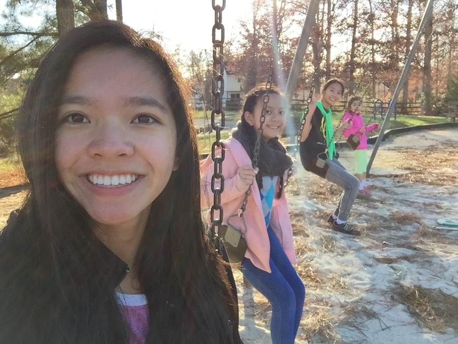

For All Paws is an animal shelter founded by Jacob Helton, Autumn Alston, and Lily Tran to help animals in need within the community of Chesterfield. Our mission was first thought of when Autumn Alston saw an extremely emotional commercial showing the inhumane treatment of animals. Naturally, Autumn called on two of her closest friends and coworkers; Jacob Helton and Lily Tran to aid her in her venture. The natural affinity to dogs, cats, and goats that Jacob, Autumn, and Lily share is the glue which holds For All Paws Animal Shelter together to this day.
Autumn Alston 24, lives here in Chestefield County. She shares big responsibilities along with the other founders of For All Paws. Autumn graduated from Virginia Commonwealth University to succeed her masters in business. Autumn has always been an animal lover, so she was quick to get on board with the animal shelter idea. She puts her all into what she does and hopes the best for the company's future.

Lily Tran 23, is from Chestefield County but recently moved to L.A. to get started on opening up a 2nd For All Paws. She shares big responsibilities along with the other founders of For All Paws. Lily graduated from Virginia Commonwealth University in 2015 to succeed her masters in business.

Jacob Helton 25, is from Chestefield County. He majored in Computer Science at Christopher Newport University. Jacob Serves as a SQL Server Administrator and Web Builder at For All Paws. He recently moved to AZ and is closely working with Lily at our new shop in L.A.! He is also not Jacob Johnson.